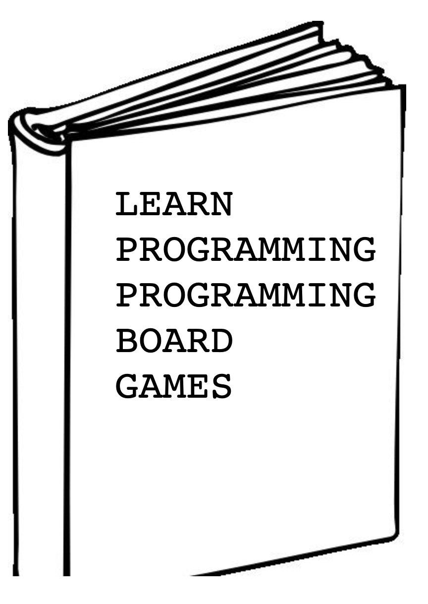

Learn Programming Programming Board Games
http://learnprogrammingprogrammingboardgames.com
Learn Programming Programming
Welcome to Learn Programming Programming Board Games.
The idea of this book is to take what you already know about board games and see how to convert your understanding of how those games work into interactive programs.
We'll start introducing fundamental programming concepts and building simple games. Then we'll learn more concepts and build more complex games. The games we'll be building are broken into these broad categories:
- Simple Games: Guess My Number, Rock Paper Scissors, Hangman, Tic Tac Toe, Connect Four
- Card Games: War, Blackjack, Thirteen, Poker, Hearts, Cribbage
- Grid Games: Othello, Checkers, Chess, Go, Chinese Checkers
- Classic Games: Monopoly, Chutes and Ladders, Risk, The Game of Life
- Modern Games: Settlers of Catan, Carcassonne, Dominion, Powerboats
I've arranged the games to coincide with a good order of programming concepts. There's enough complexity and diversity in these games to cover A LOT of programming topics. Here's some of what we'll cover:
- Data (text, numbers, lists, objects)
- if-statements
- for-loops, while-loops
- Variables, functions, parameters, return values
- Classes, object-oriented programming, encapsulation, abstraction
- Unit testing, file input / output
- Data structures: arrays, lists, linked lists, stacks, queues, maps, hash maps, trees, graphs
- Algorithms: sorting, shuffling, recursion, traversals
- Programming languages: showing off diversity of JavaScript, Python, Java, Ruby, Julia, Rust (why not?!)
Enjoy the read!
Flying High Above the Terrain
Ever seen a program before? Take a look at this one to get a sense of what it is all about. This program finds the closest board game store from a given location. It happens to be written in JavaScript, but that's not important.
You can edit and run this program here: https://repl.it/@geluso/find-closest-board-game-store
(Note: JavaScript usually declares variables with var, let or const
keywords. I'm omitting them now. We'll talk about them later.)
// the quadratic equation finds the distance between two points.
// distance = square root (x1-x2)^2 + (y1-y2)^2
function findDistance(location1, location2) {
dx = location1.lat - location2.lat
dy = location1.long - location2.long
return Math.sqrt(dx * dx + dy * dy)
}
function findClosestPlace(location, locations) {
closestPlace = null;
closestDistance = null;
for (index = 0; index < locations.length; index++) {
place = locations[index]
distance = findDistance(myLocation, place)
// if closestPlace is null then just save this place as the first
// "||" or, keep track of the closest place seen so far
if (closestPlace == null || distance < closestDistance) {
closestPlace = place
closestDistance = distance
}
}
return closestPlace
}
function main() {
boardGameStores = [
{name: "Blue Highway Games", lat: 47.6386, long: 122.3571},
{name: "Mox Boarding House", lat: 47.6649, long: 122.3805},
{name: "Gamma Ray Games", lat: 47.6151, long: 122.3253},
]
myLocation = {name: "Gas Works Park", lat: 47.6456, long: 122.3344}
closest = findClosestPlace(myLocation, boardGameStores)
console.log("The closest store is:", closest.name)
}
main()
Observing the Program
//slashes are comments. We're allowed to add notes throughout out program describing at a high-level what's going on with different pieces of code.- There's variables in the program used to store information.
boardGameStoresdefines a list/array of board game stores.myLocationstores information about the location I'm looking from.closestis a variable that get a value that returns from thefindClosestPlacefunction.
- We're using an array
[]to store items in a list. - We're using objects
{}to build a single thing that holds three properties and their values:name,latandlong. It's nice to group these properties and values together because they represent the same one thing. - There are some built in functions like
Math.sqrt()that perform common operations. console.logis a built in function that prints our output.- There's three functions in this program,
main,findClosestPlaceandfindDistance. Functions allow us to organize and reuse code. Reading the contents of just themainfunction gives you a good idea what's happening in the program without having to look at what's going on inside thefindClosestPlacefunction. - Each function may accept parameters. Parameters define data passed to the function. Parameter values can be different each time the function is ran.
- The last line of the program has a call to the
main()function to run the whole program.
One thing worth mentioning right off the bat: it's a common misconception that programming requires lots of math. Don't be discouraged! This is not true! Programming is more about logic than math. Especially in my own personally programming I rarely use anything more complicated than that distance formula.
Now that you've seen one program in whole, let's continue talking more about each individual parts.
Here's what we'll cover as we learn the fundamentals of programming:
- Values: what kind of data can a program store? Numbers, text, arrays, objects.
- Variables: how are values stored in a program?
- Functions: how can we make portions of code reusable? Passing parameters into functions and getting return values out.
- Control Flows: how can we use if-statements so the program makes decisions appropriately as it runs?
- Loops: how can we use for loops and while loops to make a program do things over and over again? Like looking at each board game store in our list.
We'll start out building these games to cement these concepts:
Guess My Number
Write a program where the computer picks a random number between 1 and 100 and you enter guesses until you guess correctly. Write the program so it tells the player if the number is "higher" or "lower" from each guess. Structure the program so it's impossible for the user to enter input that crashes the program.
Rock, Paper, Scissors
Write a program that plays Rock, Paper, Scissors against a computer. Keep track of how many times the player wins versus the computer. Allow the user to choose what kind of game they want to play by entering how many games they want to play the "best out of." Extend the program so it has more pieces than just rock, paper, and scissors.
Hangman
Write a program that plays a classic game of hangman. The program chooses a random word and lets you guess letter by letter until you guess the entire word... or until you don't. Learn how to read words from a text file. Write code that compares user guesses to the chosen word and displays partial matches. Have fun making and displaying different frames of ASCII art (pictures made up of letters typed from your keyboard). Extend the program to learn how to make an "evil" hangman program that cheats cleverly, secretly changing the word as users enter their guesses while maintaining plausible deniability.
Tic Tac Toe
Write a program to play a small game of Tic Tac Toe. Learn how to represent a 3x3 grid with a small two-dimensional array. See different approaches for checking for three-in-a-row win conditions. Configure the game to be playable with two-players. Extend the game with dumb and sophisticated AIs to play against a single player.
Connect Four
Expand your knowledge of 2D arrays from Tic Tac Toe. Write a program to play Connect Four on a 5x7 grid. Come up with new strategies to detect four-in-a-row win conditions across the larger grid. Simulate "gravity" simplistically to represent tokens dropping down in to place in a column. Extend the program with a slightly sophisticated AI that makes it hard for humans to place their last tokens, and won't ever miss taking a change to score four-in-a-row. (Building a more sophisticated AI that explores the game space more deeply will come later in the book.)
Card Games
It's time for something new! At this point you've built several games and gained a good sense of how to use variables and functions to build out a complete game. In these card games we'll focus more on arrays and objects to see how we can use these data structures to represent more complex game states.
We'll also introduce the idea of Classes, and object-oriented program to build pieces of our program to represent Cards, Hands, Decks, and Players.
Finally, building card games would not be complete without writing an algorithm to shuffle our cards. We'll write some naive shuffling algorithms first then refer to an awesome Mike Bostock visualization and see why the Fischer-Yates shuffling algorithm is truly the best.
War
Start learning how to build a class to represent Cards and Decks. Build a program that plays the mindless game of War. See how the program gets tricky to program when you have a war, with a war, with a war, with a war. Learn how to draw state diagrams with pen and paper to represent and reason about more complex game states.
Rewrite the game with a variation of War that allows players to draw hands and select what card they want to play.
Interlude: learn how to use a tool called curses to make our programs snappy
and more immediately interactive.
Blackjack
Write a program playing the classic game of Black Jack! Deal with the ambiguity of whether an Ace is worth 1 or 11. Spooky!!
Extend the program to include multiple players and build variations on AIs that play smart, dumb, chaotic and various degrees of risky.
Solitaire
Finally, a rest from multiplayer games. Write your own version of solitaire and deal with the mild complexity of moving long runs of cards from one pile to another.
Extend the program by writing a version of "Slap Solitaire" where users slap the spacebar to automatically make a move if there's just one obvious possibility, and otherwise flick through drawing cards in the deck.
Poker
Build a single-player version of handheld poker. Use the Dictionary/Map data structure to write algorithms that organize and detect poker hands.
Extend the program to include multiple players, managing bets and splitting pots.
Thirteen
Just a fun game. Why not build it?